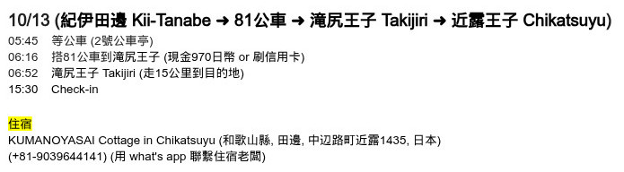
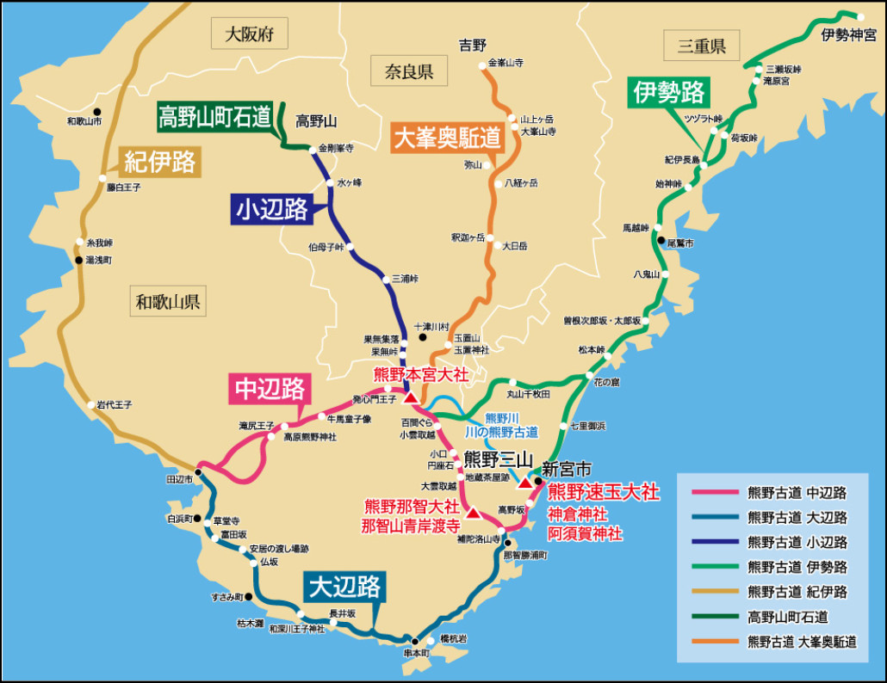
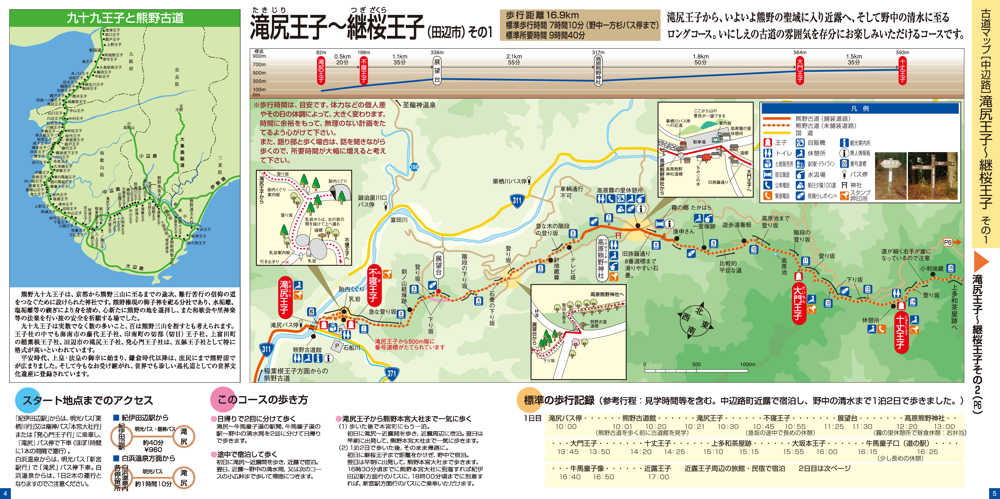
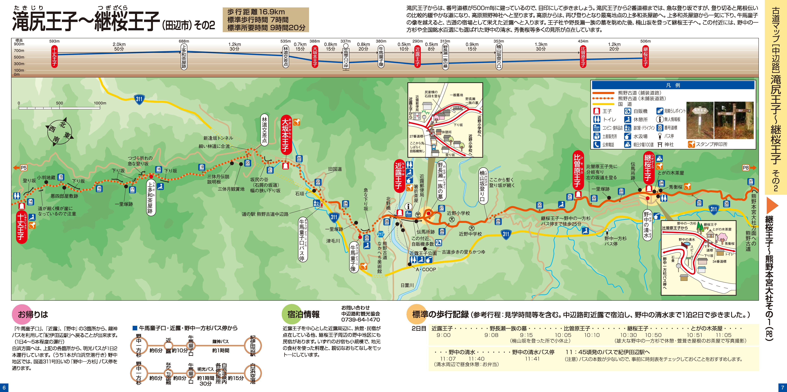
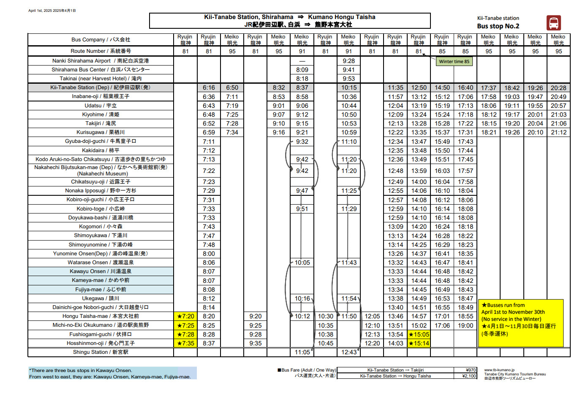
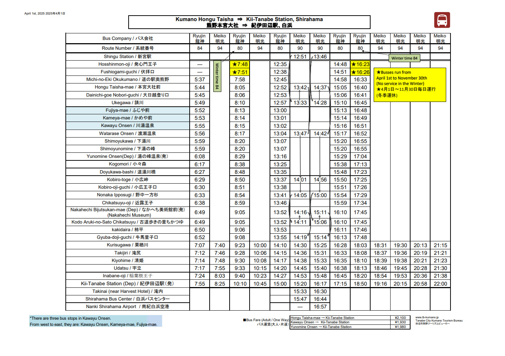
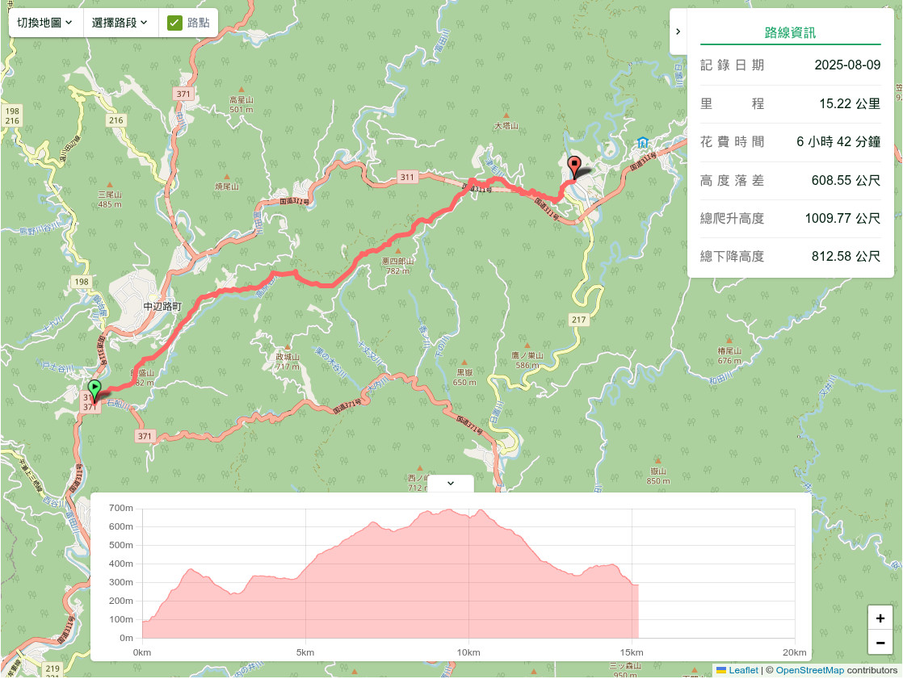

參考資訊：
Mark的旅記 https://www.wayfarer.idv.tw/
熊野古道攻略 https://87cat.com/kumanokodo/
熊野古道攻略 https://smallove.pixnet.net/blog/post/47755380
熊野古道住宿 https://www.tb-kumano.jp/en/lodging/list/
熊野古道住宿 https://buencamino.com.tw/archives/1947
熊野古道常見問題 https://docs.google.com/document/d/1nm3ArleMcLW4NesF8qbIkhUZqSD8BbR33G9AiTyNRWE/edit?tab=t.0#heading=h.wl4qe0tzrtq8
熊野古道之中邊路踏破 https://www.caseygotravel.com/nakahechi_day1/
行程表：






